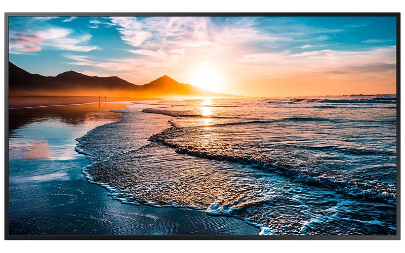
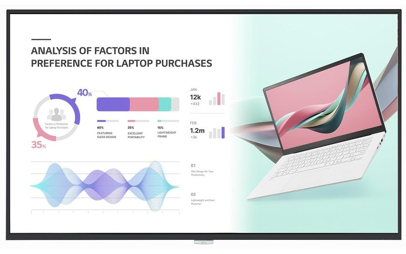
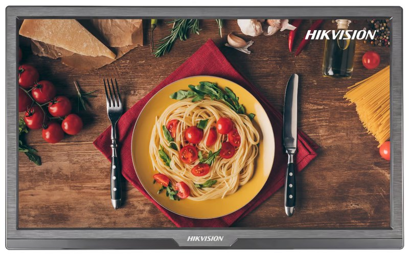

Indoor Display
Samsung Signage Series
Display profesional untuk kebutuhan komunikasi visual indoor dengan kualitas gambar tajam.
CV Cahaya Mustika menyediakan perangkat display dan solusi Digital Signage untuk membantu bisnis dan institusi menyampaikan informasi secara modern, jelas, dan menarik.


CV Cahaya Mustika adalah penyedia perangkat Digital Signage dan Office Equipment yang berbasis di Malang, Jawa Timur.
Kami membantu kebutuhan display profesional untuk perkantoran, pendidikan, retail, hotel, fasilitas publik, dan berbagai lingkungan bisnis.
Pilihan perangkat sesuai kebutuhan.
Rekomendasi berdasarkan ruang dan penggunaan.
Pendampingan untuk kebutuhan instalasi.
Komunikasi dan dukungan yang mudah.
Kenali pilihan display profesional kami. Informasi merk, model, spesifikasi, dan harga tersedia di halaman Produk.

Display profesional untuk kebutuhan komunikasi visual indoor dengan kualitas gambar tajam.

Display dengan visual 4K dan platform pintar untuk berbagai kebutuhan ruang.

Display profesional dengan desain ramping untuk kebutuhan informasi dan komunikasi visual.
Lebih dari sekadar menjual perangkat — kami menjadi mitra solusi display bisnis Anda.
Perangkat display dari brand global dengan kualitas dan spesifikasi yang dapat diandalkan.
Pendekatan konsultatif agar spesifikasi tepat sesuai kebutuhan ruang, konten, dan penggunaan.
Tim berpengalaman memberikan rekomendasi solusi display sesuai kebutuhan bisnis Anda.
Layanan purna jual dan asistensi teknis responsif agar sistem tetap beroperasi tanpa hambatan.
Perangkat ramping dengan bezel tipis yang mempercantik interior sekaligus mendukung kebutuhan operasional.
Integrasi perangkat keras dengan sistem manajemen konten yang mudah dioperasikan.
Temukan informasi, tips, dan wawasan seputar penggunaan digital signage untuk bisnis dan institusi.

Pertimbangkan ukuran layar, lokasi pemasangan, tingkat kecerahan, dan kebutuhan konten sebelum memilih display.
Baca Selengkapnya
Resolusi tinggi membantu menampilkan teks, gambar, dan video dengan detail yang lebih tajam.
Baca Selengkapnya
Gunakan layar digital untuk promosi, informasi produk, navigasi, dan komunikasi visual pengunjung.
Baca SelengkapnyaInformasi singkat untuk membantu Anda memahami produk dan layanan CV Cahaya Mustika.
Digital signage adalah media display digital yang digunakan untuk menyampaikan informasi, promosi, pengumuman, atau konten visual secara dinamis.
Kami menyediakan berbagai pilihan display profesional dari Samsung, LG, dan Hikvision untuk kebutuhan indoor, wall mount, floor standing, serta kebutuhan visual lainnya.
Ya. Tim CV Cahaya Mustika dapat membantu menyesuaikan pilihan perangkat berdasarkan ukuran ruang, lokasi pemasangan, jenis konten, dan kebutuhan penggunaan.
Untuk kebutuhan proyek, Anda dapat berkonsultasi dengan tim kami mengenai kebutuhan pemasangan dan dukungan proyek.
Jenis perangkat harus disesuaikan dengan lokasi penggunaan. Tim kami dapat membantu memilih spesifikasi display yang sesuai dengan kondisi ruang dan lingkungan.
Klik tombol Minta Penawaran atau Hubungi Kami, lalu sampaikan kebutuhan display Anda. Tim kami akan membantu proses konsultasi dan penawaran.
Konsultasikan kebutuhan display Anda bersama CV Cahaya Mustika.